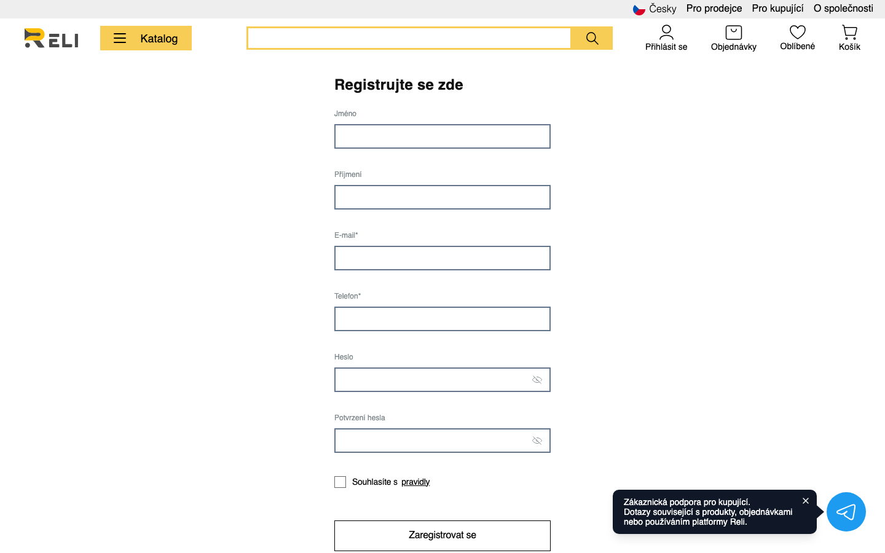
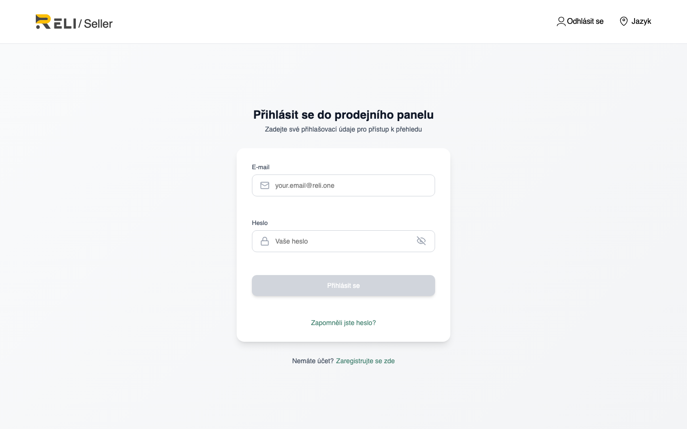

Co dělat, pokud jste vytvořili účet kupujícího a nyní chcete prodávat na Reli.one.
Verze: červen 2026
1. V čem je problém
V systému Reli.one jsou účty kupujícího a prodejce různé typy účtů
s odlišnými oprávněními. Při registraci kupujícího se vytvoří uživatel s rolí Customer;
pro prodej je potřeba role Seller a absolvování onboardingu (ověření).
Důležité: stejný e-mail nelze použít znovu.
Pokud jste již zaregistrováni jako kupující, formulář
https://reli.one/seller/create-account
vrátí chybu «user with this email already exists».
Obr. 1 — Při registraci bylo nutné vybrat «Stát se prodejcem», nikoli kupujícího

Obr. 2 — Standardní registrace kupujícího na webu
2. Co se stane při pokusu přihlásit se jako prodejce
Přihlášení do prodejního panelu probíhá na adrese
https://reli.one/seller/login.
Heslo z účtu kupujícího může fungovat pro autorizaci, ale přístup k onboardingu
a funkcím prodejce se neotevře, dokud účet nemá roli Seller.

Obr. 3 — Stránka přihlášení do prodejního panelu
3. Možnosti řešení
Varianta A — Kontaktovat podporu (doporučeno)
Napište na office@reli.one s předmětem
«Převod účtu na prodejce» a uveďte e-mail, pod kterým jste zaregistrováni jako kupující.
Vzor e-mailu:
Dobrý den,
Zaregistroval(a) jsem se na Reli.one jako kupující, ale chci na platformě prodávat zboží.
E-mail účtu: vas@email.com
Prosím o pomoc s převodem účtu na prodejce nebo o informaci o dalších krocích.
S pozdravem,
Jméno Příjmení
Tým podpory ručně přiřadí roli prodejce a vytvoří profil Seller.
Poté se můžete přihlásit na https://reli.one/seller/login a projít onboarding se stejným e-mailem.
Varianta B — Registrovat prodejce na jiný e-mail
Vytvořte nový účet prodejce s jinou e-mailovou adresou:
Projděte onboarding podle instrukce «Nová registrace prodejce».
Účet kupujícího na starém e-mailu zůstane — z něj můžete stále objednávat.
Prodej bude veden z nového účtu prodejce.
Varianta C — Smazat účet kupujícího a zaregistrovat se znovu
Upozornění: při smazání účtu ztratíte historii objednávek, oblíbené položky a další data
vázané na profil kupujícího. Tuto variantu použijte pouze pokud nemáte aktivní objednávky
a jste si rozhodnutí jisti.
Smažte účet v nastavení profilu (Smazat účet) nebo kontaktujte podporu;